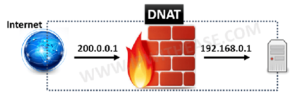

Universidad Técnica Nacional
Configuración de Dispositivos de Red
ISW-1011
Proyecto I
Estudiantes:
Josué Soto Chacón
Humberto Vargas Cordero
Daniel Alfaro Sequeira
Profesor: Randall Zamora Rojas
DNS
El Sistema de nombre de dominio, o DNS, es el
eje de tu presencia en línea. Cada nombre de dominio usa DNS para controlar cómo encuentran tu
sitio web los visitantes y cómo recibes correo electrónico.
Por ejemplo: Se puede
considerar al nombre de
dominio como una dirección física y el DNS actúa como tu GPS. Los visitantes no encontrarán tu
dirección si el GPS no puede proveer las instrucciones correctas. Esto significa que si tu DNS
es incorrecto, tu sitio web y correo electrónico no funcionarán como deberían.
DHCP
El protocolo DHCP (Protocolo de configuración dinámica de host) o también conocido como «Dynamic Host Configuration Protocol«, es un protocolo de red que utiliza una arquitectura cliente-servidor. Por tanto, tendremos uno o varios servidores DHCP y también uno o varios clientes, que se deberán comunicar entre ellos correctamente para que el servidor DHCP brinde información a los diferentes clientes conectados.
NAT
Podemos decir que son las siglas de Network Address Translator, o en español traductor de direcciones de red. Su función es precisamente esa, traducir las direcciones para que sean posibles las conexiones. El NAT es una parte fundamental entre nuestros dispositivos e Internet. Forma parte del router, módem o el equipo que utilicemos para conectarnos a la red. En ocasiones es conocido como enmascaramiento de direcciones IP. Esto es así ya que permite crear una dirección IP pública para que posibles extraños no pirateen nuestra red.
Firewall
Un firewall, también llamado cortafuegos, es un sistema cuya función es prevenir y proteger a nuestra red privada, de intrusiones o ataques de otras redes, bloqueando el acceso. Permite el tráfico entrante y saliente que hay entre redes u ordenadores de una misma red. Si este tráfico cumple con las reglas previamente especificadas podrá acceder y salir de nuestra red, si no las cumple este tráfico es bloqueado. De esta manera impedimos que usuarios no autorizados accedan a nuestras redes privadas conectadas a internet Se puede implementar en forma de hardware, de software o en una combinación de ambos.
DNAT
DNAT, como su nombre indica, es una técnica que traduce la dirección IP de destino generalmente cuando se conecta desde una dirección IP pública a una dirección IP privada. Generalmente se usa para redirigir paquetes destinados a una dirección IP específica o un puerto específico en una dirección IP, en un host simplemente a una dirección diferente, principalmente en un host diferente. La DNAT se utiliza para redirigir el tráfico destinado a un host virtual (identificado por la dirección IP de destino original) al host real (identificado por la dirección IP de destino traducida).
Traffic Shaper (Queues)
Traffic Shaping es una estrategia para mejorar el rendimiento y la gestión de tráfico en una red. Al estar muchas redes con limitaciones en el ancho de banda, hace falta una buena estrategia para asegurar que no se sobrecarguen. El tráfico de red puede a veces causar que una red se sature demasiado lo cual puede llevar a momentos donde todo va demasiado lento. Para entender cómo funciona Traffic Shaping es importante saber cómo la información es transportada a través de una red.